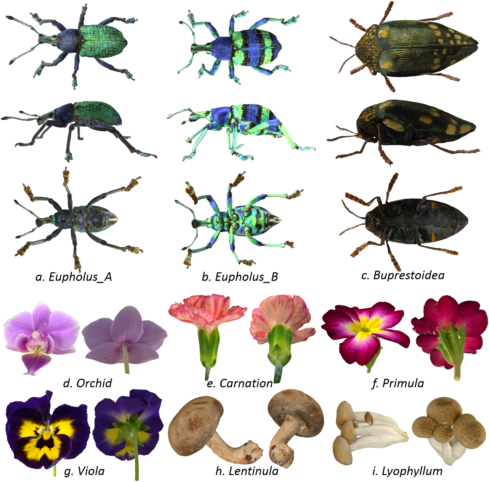

Digitization of natural objects with micro CT and photographs
Takashi Ijiri 1, Hideki Todo 2, Akiraa Hirabayashi 3, Kenji Kohiyama 4, Yoshinori Dobashi 5.
1. Shibaura Institute of Technology, 2. Chuo Gakuin University, 3. Ritsumeikan University, 4. Keio University, 5. Hokkaido University
Abstract. In this paper, we present a three-dimensional (3D) digitization technique for natural objects, such as insects and plants. The key idea is to combine X-ray computed tomography (CT) and photographs to obtain both complicated 3D shapes and surface textures of target specimens. We measure a specimen by using an X-ray CT device and a digital camera to obtain a CT volumetric image (volume) and multiple photographs. We then reconstruct a 3D model by segmenting the CT volume and generate a texture by projecting the photographs onto the model. To achieve this reconstruction, we introduce a technique for estimating a camera position for each photograph. We also present techniques for merging multiple textures generated from multiple photographs and recovering missing texture areas caused by occlusion. We illustrate the feasibility of our 3D digitization technique by digitizing 3D textured models of insects and flowers. The combination of X-ray CT and a digital camera makes it possible to successfully digitize specimens with complicated 3D structures accurately and allows us to browse both surface colors and internal structures.
Materials
open access paper
3D models
@article{ijiri2018,
title = "Digitization of natural objects with micro CT and photographs",
author = "Takashi Ijiri and Hideki Todo and Akira Hirabayashi and Kenji Kohiyama and Yoshinori Dobashi",
year = "2018",
month = apr,
doi = "10.1371/journal.pone.0195852",
volume = "13",
number = "4",
journal = "PLoS One",
issn = "1932-6203",
}
